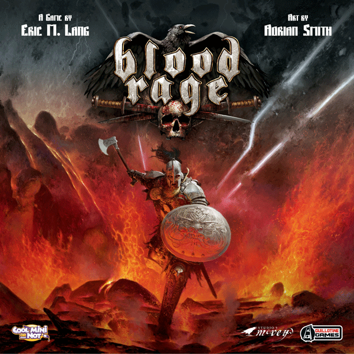

This week Board Crazy reviews Blood Rage, a board game designed by Eric M. Lang and published by CMON. Ragnarök is here, and each viking wants to die the most glorious death to secure their place in Valhalla! Read further to see what we thought of Blood Rage.

D reviews Blood Rage
 (Author’s
note: this review is meant to accompany our gameplay video and will not
go in-depth on the game’s rules. If you’re interested in learning how
the game is played, please watch the video. It’s not bad.)
(Author’s
note: this review is meant to accompany our gameplay video and will not
go in-depth on the game’s rules. If you’re interested in learning how
the game is played, please watch the video. It’s not bad.)
Almost all tabletop games have a theme of some sort. Even abstract ones tend to have some semblance of a setting or genre. Chess, for example, can be accurately described as a medieval military strategy game, while Santorini has its Greek Gods and a real-life city as inspiration. That being said, I think it’s difficult for a tabletop game to really nail its theme in a way as to make the experience of playing it an immersive one. This is easier in other forms of entertainment where moving images and stories are used to draw in the audience, but with a board game you’re (usually) interacting with other people you know and actively manipulating the “world” of the game in order to get to the end. This makes each player more of a god-like figure rather than a smaller piece of a larger picture. Granted, many games aren’t concerned with immersion and are more about the mechanics and simply providing fun and perhaps a challenge to their players, but it is a feature that I personally really value in my entertainment.
Ragnarok, the ultimate doom!
All of that is to say that Eric M. Lang’s Blood Rage really does a good job of making its players feel like the leaders of Viking clans at the end of the world. The artwork and the figures are all very evocative, and the game makes full use of ancient Norse mythology. More familiar terms and figures like Valhalla and Thor are present, as well as locations and gods that are likely to be foreign to your average person. Most importantly though, the players’ control over the world is limited. The game starts with part of the map already destroyed by Ragnarök, and this destruction spreads throughout the game. The provinces which are destroyed (as well as their respective boons) are drawn at random, meaning the players are forced to react to the game as much as they are acting upon it. Randomness can often be frustrating, and depending on your strategy, it can be frustrating in Blood Rage as well, but here it is thematically appropriate. You’re not being affected by lazy game design, but rather by nature and its unpredictable wrath, which makes it not just tolerable, but exciting.
I’m a succor for Frigga’s Succor.
Beyond being immersive, Blood Rage succeeds in a number of other areas as well. The card drafting is more successful here than in Inis, which we played a couple weeks ago, with there being enough cards going around that they all feel useful. The gameplay is surprisingly simple in terms of what you can do at any time, but it doesn’t negatively affect the strategy involved. The third age in particular becomes a tricky balancing act of managing your available rage (action points) and maximizing the amount of glory (victory points) that you can win. Most importantly, however, is the fact that the game is just plain fun. At its best, it is a constant stream of one-upmanship that will leave its players completely unsure of who is actually going to come out ahead in the end.
If I have a criticism of the game, it’s that it sort of forces you to pick a strategy early and stick with it until the end. This might make newer players who are looking to experiment become frustrated. Fortunately, there are a good number of equally valid strategies that one can attempt. In the game we played in our video, I focused on completing quests and earning glory through death, but others include winning battles, expanding the size and reach of your clan, or pillaging like there’s no tomorrow (which there sort of isn’t). Overall, Blood Rage is one of my favorite games of the last few years, and I recommend it to anyone who considers themselves a fan of tabletop strategy games.
D’s Rating: Four and One-Half Stars out of Five.
Will reviews Blood Rage
 First
off, I love Vikings (not you, Minnesota). I’ve always been intrigued by
their culture and warrior spirit, and I’m a big fan of TV shows like Vikings and The Last Kingdom.
Because of my interest in Norse history, I knew I was going to be a fan
of Blood Rage going in, or at least, I knew I would have a bias. It
turns out I was right to favor this board game before playing it – it’s
really frickin’ cool.
First
off, I love Vikings (not you, Minnesota). I’ve always been intrigued by
their culture and warrior spirit, and I’m a big fan of TV shows like Vikings and The Last Kingdom.
Because of my interest in Norse history, I knew I was going to be a fan
of Blood Rage going in, or at least, I knew I would have a bias. It
turns out I was right to favor this board game before playing it – it’s
really frickin’ cool.
Secure your place in Valhalla!
Conceptually and mechanically, Blood Rage is pretty different from a lot of similar strategy games. For instance, since Vikings were obsessed with attaining a glorious death (worthy of Valhalla), the game encourages players to kill off their character pieces. In fact, there’s an entire phase, the Ragnarok phase, where one territory is permanently destroyed and all those within it slain. If you happen to have warrior pieces in that location when it’s obliterated, you earn Glory points. Glory is Blood Rage’s version of victory points, and collecting them is how you win the game. Although it seems counterintuitive, killing your pieces is almost necessary to win, and this really makes the game stand out as something rather unique.
On the other hand, there are plenty of mechanics within Blood Rage that are rather standard. There are cards that aid in battle, cards that upgrade units, and cards that feature quests for additional Glory. I have seen similar cards used in other board games, but collecting these cards (during the drafting phase) is still a lot of fun. Also, there’s a restrictive element of gameplay called Rage, which limits how much a player can do during the action phase of an Age (round). When your Rage runs out, you’re done marching, pillaging, and upgrading, so Blood Rage encourages its players to be smart when making their moves. I have seen comparable systems used in other strategy games, but again, it makes sense here and adds to the experience.
The mighty sea serpent!
I’d be remiss if I didn’t mention the pieces themselves, which are impressively designed. The warrior, leader, and ship pieces could all use a bit more color, but that fact didn’t stop me from appreciating them. And then there are the monster pieces, which are (sometimes) much larger and more detailed. There’s nothing more satisfying than playing a monster card and calling in the big guns. When a Fire Giant enters the battlefield, people tend to notice – it’s a great feeling. In fact, the monsters may be my favorite part of Blood Rage – they contribute that much to the gameplay.
All in all, I really enjoyed this game. In truth, I’m having a difficult time coming up with anything bad to write about it. I’m not saying Blood Rage is perfect: there are some unfair cards, drafting can really benefit someone with good luck, and it’s too easy to knock a player out of contention in the first round. However, when it all goes right, there are few board games that are as agreeable and engaging as this one. The again, I have a bias – Vikings are awesome.
I give it an: A-
Graham reviews Blood Rage

To start, I liked Blood Rage – a lot. It is one of my favorite games I’ve played to date, but before I get into why this game is so great, there are some issues I would like to point out. My first issue with the game is that there seems to be a runaway leader problem. I won’t delve too much into this because it could just be an issue with the games we have played, but it is slowly becoming a trend in our group. My second (and main) criticism of the game has to do with the unit limit that exists within every territory except Yggdrasil. To elaborate, every territory has a set amount of spaces that pieces can occupy, and this limit doesn’t make much sense to me. In my mind, if I’m a Viking trying to attain glory through battle, I don’t care if a territory is a little crowded – I’m going to invade, destroy and pillage everything existing within that land. I wasn’t there for the playtesting, so maybe this was a necessary limit put in place by the developers. Still, in a game that’s meant to be all about battle, death and Valhalla, I think it encourages players to utilize conservative strategies too much.
Umm… watch out for the fire giant.
With that being said, who doesn’t want to die a courageous death and reach Valhalla? Gaining glory (victory points) for death in battle is a unique game mechanic that really makes you rethink your typical strategies. I definitely found myself trying to win battles that probably would have been better if I lost. That aspect of Blood Rage was a really great way to make this board game experience more immersive – you need to try and think like a Viking! I also really liked the balance and variety of the cards, which is nice because it’s the primary source of your strategy. Of course, there are cards that are more powerful than others, but there are also enough of these cards that you are almost guaranteed to get one during the drafting phase.
One of the awesome leader miniatures!
Also, don’t get too attached to a single strategy because it’s almost guaranteed to get ruined once or twice throughout the game. If you make it through a session of Blood Rage and only execute a single strategy, you’re extremely lucky. The shifting of tactics and destruction of plans are part of the fun though, as it keeps players on their toes. Finally, I just want to give appreciation to the miniatures in Blood Rage. Board games are not inexpensive, and it can be frustrating to drop $50+ on one and open it to find poorly crafted pieces. The miniatures in this game are durable, large, and look amazing – it definitely helps you feel like you’re getting your money’s worth.
Blood Rage has its flaws, but they are absolutely outnumbered by the great things this game has to offer. The unique and interesting game mechanics, combined with a variety of exciting cards, really makes for a great time. I could say a lot more about this game, but I will leave you with one final thought… watch out for the fire giant. Two thumbs up!
Leave a Reply
You must be logged in to post a comment.